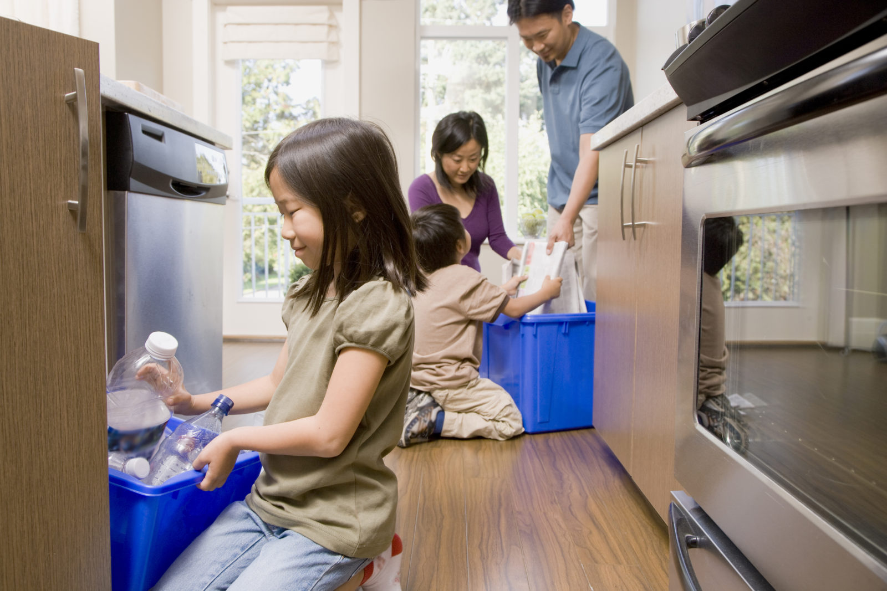
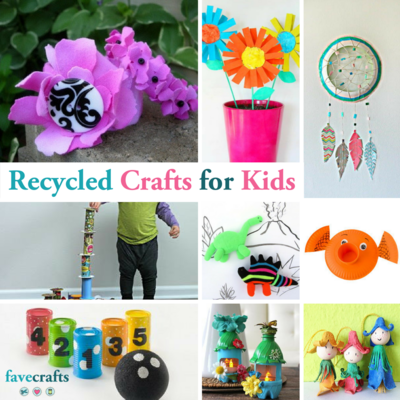

ACTIVITIES FOR PEOPLE TO LEARN ABOUT SUSTAINABILITY

- PICK UP TRASH.
Go on a ‘green team walk’ with your kids and bring along some gloves and a bag. Kids will enjoy feeling the impact that they have on the earth as they help clean up their own neighborhood or street.
- PLANT A GARDEN
Growing your own organic food helps save on the distance food has to travel to get to you. Plus, teaching kids to garden is such a beneficial experience!
- SORT THE GARBAGE.
Many items that are often put in the garbage are compostable. Composting allows food to decompose naturally into fertile soil.
- REUSE ITEMS FOR CRAFTS.
The recycling bin is a great place to turn for craft inspiration! Here are some ideas to get you started.

- . PLAY OUTSIDE!
This simple activity goes a long way in teaching sustainability. Sharing in and appreciating a love of the outdoors will inspire kids to care for the earth.